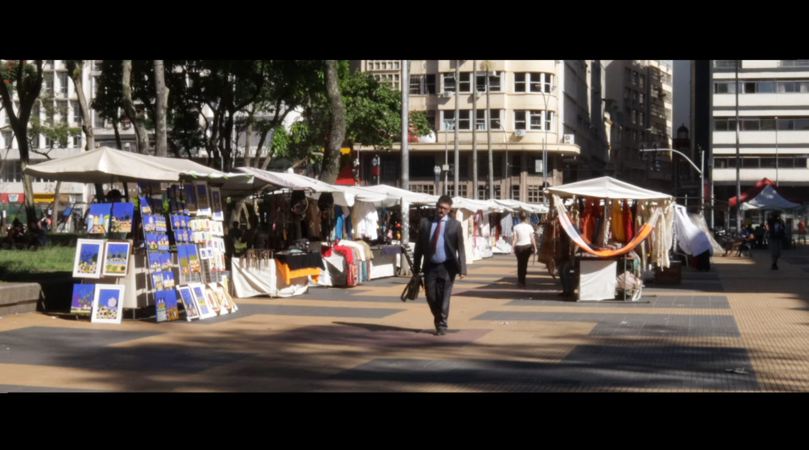
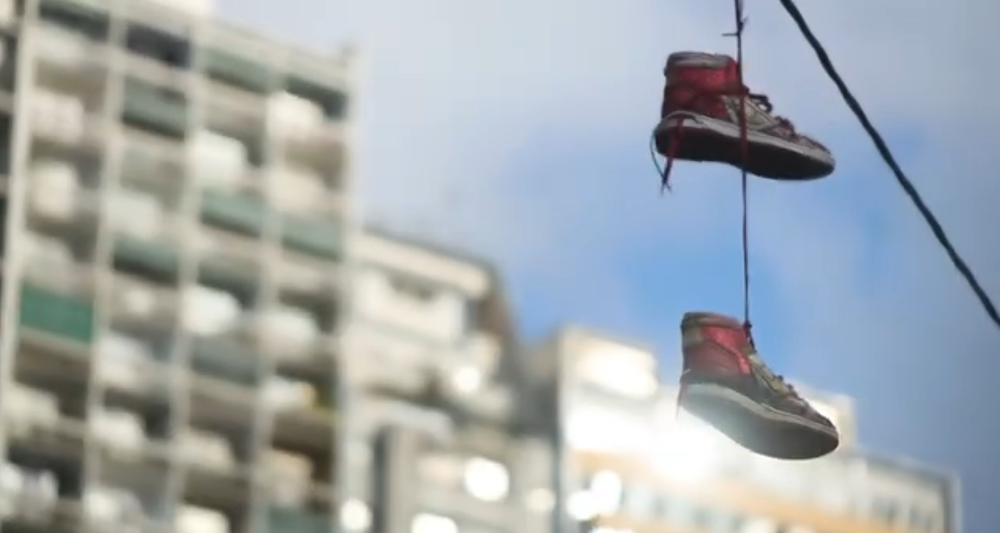
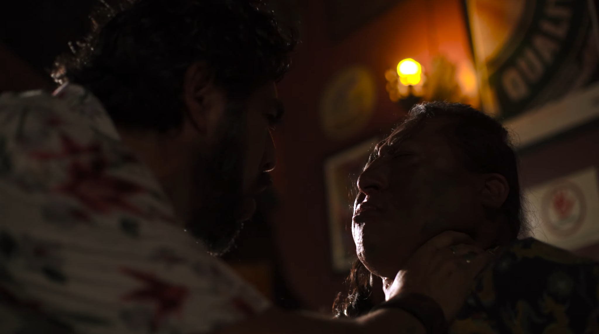
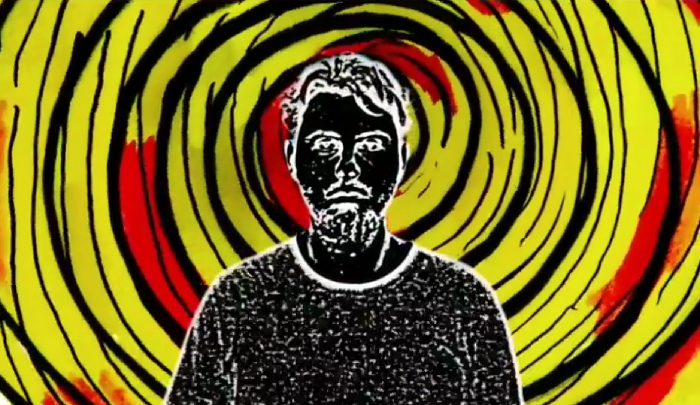
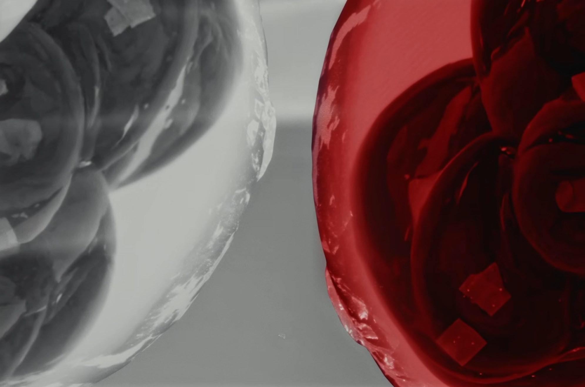
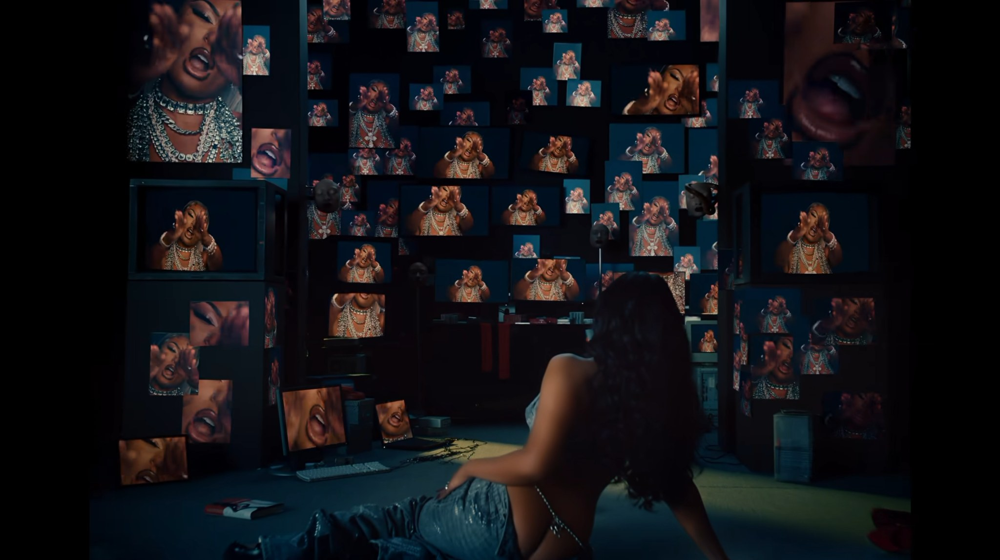

Curta-metragem · Criação autoral · 2023
Afeto Shop
Roteiro e direção: Paulo Chedid · Curta-metragem de ficção (2023).
Narrativas, direção de cena e filmes produzidos no Ateliê Visual, além de projetos desenvolvidos em colaboração com outros realizadores.

Roteiro e direção: Paulo Chedid · Curta-metragem de ficção (2023).

Direção: Paulo Chedid · Filme de divulgação do Ateliê Visual.

Direção: Paulo Chedid e Rodolfo Valentino. Roteiro, produção e atuação: Rodolfo Valentino. Proposta de cena independente.

Projeto autoral de Paulo Chedid desenvolvido no contexto da residência Sesc ETA (2020).
Composição de imagem, efeitos visuais e construção estética para cinema, séries, videoclipes e obras de artistas. Cada projeto identifica a natureza da participação e os créditos das equipes envolvidas.
Uma seleção de trabalhos de composição e efeitos visuais para cinema, séries e outras produções.
Abrir reel no Vimeo ↗
Obra de Luiz Roque · 14ª Bienal de Busan (2026) · Paulo Chedid: colaboração estética em VFX, 3D, animação 2D e composição de imagem.

Imagem do trailer oficial · Netflix
Série Netflix · 1ª temporada (2021) · Produção: Pródigo Films · Estúdio de pós-produção: Cajamanga · Paulo Chedid: integrante da equipe de composição de imagem.

Série Netflix (2026) · Produção: O2 Filmes · Estúdio de pós-produção: O2 Pós · Paulo Chedid: integrante da equipe de composição de imagem.
Filme (2022) · Direção: David Bruckner · Produção: Spyglass Media Group · Estúdio parceiro: Stratostorm · Paulo Chedid: integrante da equipe de composição de imagem.

Videoclipe de Megan Thee Stallion (2024) · Pós-produção: DOPO · Paulo Chedid: composição de imagem e VFX.
Animação, criação gráfica e direção de arte em projetos autorais e colaborações com outras produtoras. Cada projeto recebe seus próprios créditos.
Uma seleção de trabalhos de animação e criação visual realizados ao longo da trajetória profissional.
Abrir vídeo no YouTube ↗Pintura, gravura, desenho, fotografia e experimentações que investigam matéria, gesto, percepção e imagem.
Fotografias das obras em seleção; as imagens originais serão inseridas sem alterações.
Visitar loja de arte ↗O Ateliê Visual aproxima o fazer artístico das possibilidades do audiovisual contemporâneo. Criado a partir da trajetória de Paulo Chedid, reúne direção, pesquisa visual, experiência profissional e projetos autorais, com atenção aos créditos e às parcerias de cada produção.
Cinema, pós-produção, motion design, colaborações artísticas e projetos especiais.